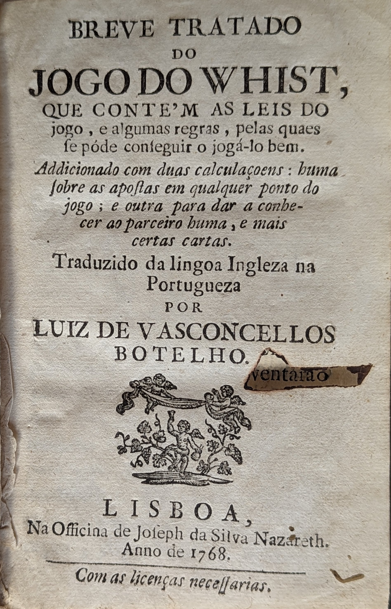

A Descriptive Bibliography of Edmond Hoyle
Copyright © 2014-26 by David Levy
(page updated 2026-03-24)User Guide
Whist.Pt.2
Breve Tratado do Jogo do Whist, Na Officina de Joseph da Silva Nazareth, second edition, 1768.
 |
Title: | BREVE TRATADO | DO | JOGO DO WHIST, | QUE CONTE’M AS LEIS DO | jogo, e algumas regras, pelas quaes | ſe póde conſeguir o jogá-lo-bem. | Addicionado com duas calculaçoens : huma | ſobre as apoſtas em qualquer ponto do | jogo ; e outra para dar a conhe-|cer ao parceiro huma, e mais | certas cartas. | Traduzido da lingoa Ingleza na | Portugueza | POR | LUIZ DE VASCONCELLOS | BOTELHO. | [tailpiece] | LISBOA, | Na Officina de Joſeph da Silva Nazareth. | Anno de 1768. | [rule] | Com as licenças neceſſarias. |
| Collation: | 8o: a–i8 k4(−k4 missing, blank?) [$½ signed]; 75 leaves, pp. [1–8] 9–150 |
| Contents: | Signature (Page) Reference | Contents | Signature (Page) Reference | Running Titles |
| a1r (1) | title | |||
| a1v (2) | blank | |||
| a2r–a3v (3–6) | ‘A QUEMLER. | [...]’ | |||
| a4r–a4v (7–8) | ‘LICENÇAS. | DO SANTO OFFICIO. | [...] | [imprimatur].’ | |||
| a5r–a8v (9–16) | ‘[headpiece] | BREVE TRATADO | DO JOGO | DO | WHIST. | CAPITULO I. | Explicaçaiõ do Jogo. | [...]’ | a5v–k3v (10–150) | ‘Breve Tratado | do Jogo do whiſt.’ | |
| on a6r (11), a7r (13), a8r (15), b6r (27), c1r (33), c7r (45), d8r (63), e8r (79), f3r (85), f4r (87), f7r (93), i2r (131), i5r (137), i6r (139) | ‘do Jogo do Whiſt.’ | |||
| a8v–k3v (16–150) | capitulo II-XII |
| Publisher: | Joseph da Silva Nazareth |
| Translator: | Luiz de Vasconcellos Botelho |
| References: | Rather B1 |
| Imprimatur: | ‘[...] | Lisboa 5 de Março de | 1768. | Affonſeca. Pacheco. | Caſtro. Craesbeck.’ |
| Copies Seen: | ICN [Greenlee 4532.1 .C26 B84 1768]; Levy [1614] |
| Other Copies: | L [D-7915.de.6] (destroyed); LB [RES. 6365 P.] |
| Notes: | The translation is from the section on whist in Games.1.1. |